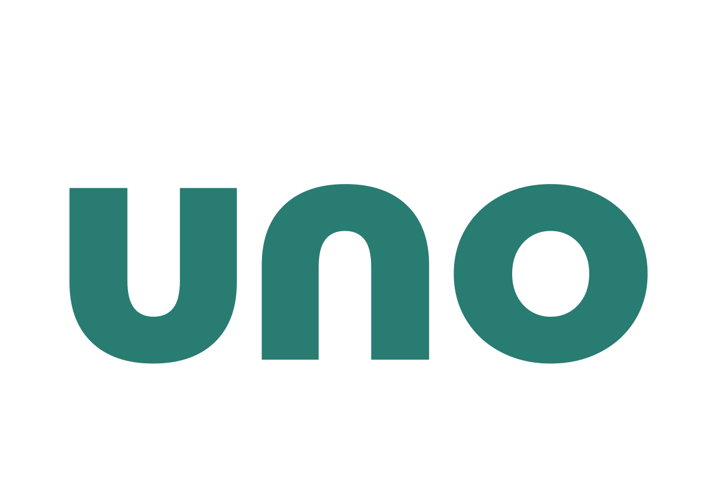

Sede
Consorzio UNO
Chiostro del Carmine
via Carmine – 09170 Oristano OR
Chiostro del Carmine
via Carmine – 09170 Oristano OR
Accesso
Libero con TOLC-SU
Durata
3 anni
Classe di laurea
L-15
Il corso
Disegnare il futuro dei territori per valorizzarne il potenziale
Se vuoi contribuire allo sviluppo dei territori attraverso il turismo, questo è il corso che fa per te. Acquisirai competenze nella progettazione, gestione e promozione delle destinazioni turistiche, imparando a valorizzare il patrimonio culturale, ambientale e identitario. Un percorso che unisce economia, marketing, sostenibilità e innovazione per formare le professioni del turismo di domani.
Cosa studierai
Destination management
Marketing e comunicazione del turismo
Sviluppo e governance dei territori
Patrimonio culturale e turismo sostenibile
Cosa potrai fare dopo
- Lavorare nelle Destination Management Organization (DMO) e negli enti del turismo
- Operare negli enti pubblici e nelle istituzioni territoriali
- Collaborare con imprese turistiche e società di consulenza
- Proseguire gli studi con una laurea magistrale in ambito turistico, economico o manageriale